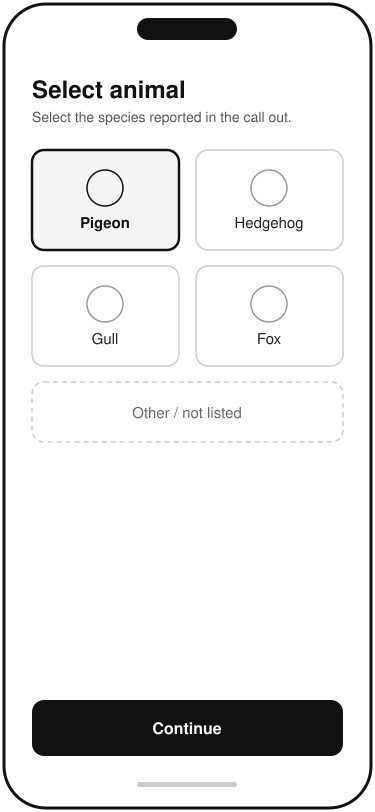
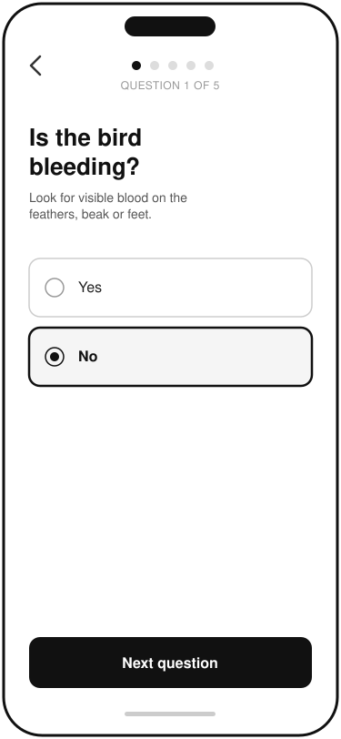
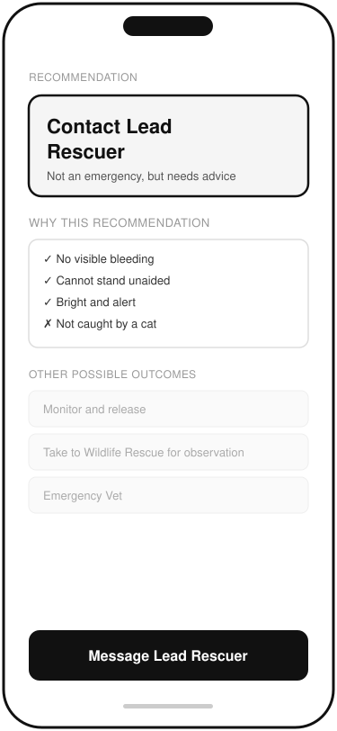
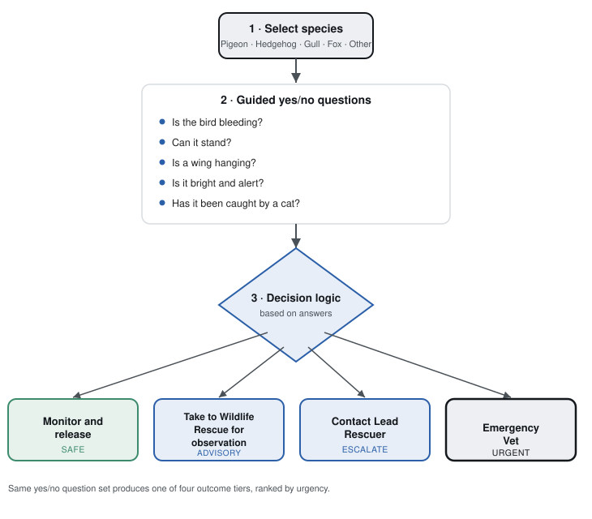

Supporting Wildlife Rescue Volunteers with a Guided Triage Tool
Volunteer wildlife rescuers often can't tell whether an injured animal needs a vet, a wildlife rescue, or can safely be left alone.
This case study explores a guided triage tool that turns that uncertain judgement call into a short, consistent set of yes/no questions.
What was the problem?
Volunteer wildlife rescuers often encounter injured animals but can be unsure whether an animal requires immediate veterinary treatment, should be taken to a wildlife rescue, can safely remain where it is, or needs advice from an experienced rescuer. This uncertainty can delay treatment, increase pressure on experienced volunteers and result in inconsistent decision-making.
Who was affected, and who had a stake?
New Volunteer (Primary User)
Role: Responds to wildlife rescue calls with limited experience.
Goal: Make the correct decision quickly and confidently.
Pain points:
- Doesn't know which symptoms are serious.
- Worried about making the wrong decision.
- Has to message experienced rescuers for common questions.
Lead Rescuer
Role: Provides guidance and oversees rescue decisions.
Goal: Spend time on complex cases rather than answering repetitive questions.
Pain points:
- Receives frequent messages about similar situations.
- Has limited time during busy periods.
- Wants volunteers to make safe, consistent decisions.
Requirements, in their words
Acceptance criteria
Wildlife Rescue
Given a volunteer has completed the assessment,
when the answers indicate the bird requires rehabilitation,
then the app recommends taking the bird to the wildlife rescue.
Emergency Vet
Given the volunteer reports symptoms indicating an emergency (e.g. a broken leg or broken
wing),
when the assessment is complete,
then the app advises immediate transport to a veterinary practice.
Contact Lead Rescuer
Given the assessment does not produce a clear outcome,
when the volunteer completes the questions,
then the app recommends contacting the lead rescuer before taking further action.
What the solution looked like
I adopted a low-fidelity wireframing approach to focus on validating the triage flow before considering visual design. As with the previous case study, I used Claude AI to rapidly generate initial concepts, which I reviewed and refined to ensure they aligned with the user stories and proposed solution.

1 · Select species

2 · Guided question

3 · Recommendation
Because the recommendation itself is driven by branching logic rather than a fixed screen flow, I also mapped the underlying decision process separately from the UI - the questions asked and how they resolve to one of four outcome tiers.

4 · Triage decision logic
Result
This solution aims to improve confidence and consistency for new wildlife rescue volunteers by providing a simple, evidence-based triage process.
Expected benefits
- Reduced likelihood of incorrect triage decisions.
- Urgent cases reach veterinary care sooner.
- Experienced rescuers can focus on complex cases rather than answering repetitive questions.
- Increased confidence and consistency for new volunteers making triage decisions.
Success measures
If implemented, success could be measured through:
- Reduction in messages sent to the lead rescuer for common, repetitive questions.
- Percentage of assessments that resolve to a clear recommendation without needing escalation.
- Time from call-out to the animal reaching appropriate care.
- Volunteer-reported confidence in their triage decisions.
- Consistency of outcomes across volunteers assessing similar symptoms.
Reflection: The concept would be validated through usability testing and feedback from volunteers and rescue trustees and leaders.